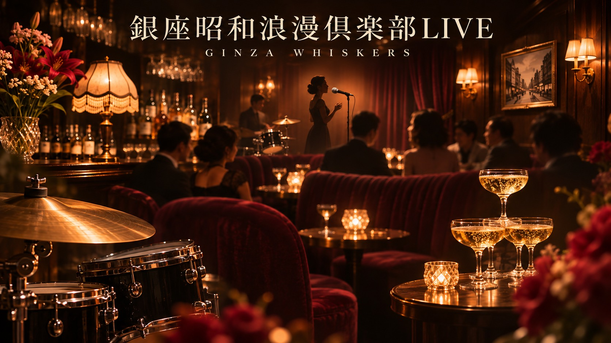

銀座昭和浪漫倶楽部LIVE
懐かしい歌と、新しい出会いを。
ふと口ずさむ一曲に、あの日の景色がよみがえる。初めて会う人とも、好きな歌の話から会話が始まる。
銀座昭和浪漫倶楽部LIVEは、昭和浪漫時代に銀座で流れていた、洋楽・邦楽を囲み、歌と会話を楽しむ月に一度の集いです。会場は、銀座一丁目のClub Charmant。
ゆうたろうのハモりとドラムの伴奏で歌う時間も、席で耳を傾ける時間も。曲の背景やエピソードを交えたトークとともに、それぞれの楽しみ方でお過ごしいただけます。
懐かしさをきっかけに、今日の出会いが生まれる。銀座の夜に、あなたの一曲と、新しい思い出を。
歌っても、聴くだけでも。
- 歌う 伴奏に身を委ね、好きな歌を楽しむ。
- 聴く 歌声や演奏、曲にまつわる話に耳を傾ける。
- 語らう 一曲の思い出から、会話を楽しむ。
お一人で参加される方もいらっしゃいます。初めての方は、参加ガイドをご覧ください。

次の銀座の夜へ。
開催日やテーマ、料金・お申し込み方法は、各回の開催案内でご確認ください。これまでのLIVEの様子は、noteマガジンでご覧いただけます。